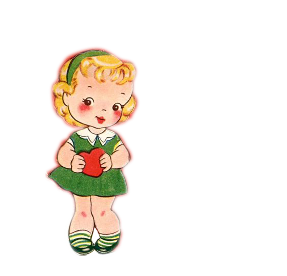

In the United States, the first mass-produced Valentines of embossed paper lace were produced and sold shortly after 1847 by Esther Howland (1828–1904) of Worcester, Massachusetts.[70][71] Her father operated a large book and stationery store, but Howland took her inspiration from an English Valentine she had received from a business associate of her father.[72][73] Intrigued with the idea of making similar Valentines, Howland began her business by importing paper lace and floral decorations from England.[73][74] A writer in Graham's American Monthly observed in 1849, "Saint Valentine's Day ... is becoming, nay it has become, a national holyday."[75] The English practice of sending Valentine's cards was established enough to feature as a plot device in Elizabeth Gaskell's Mr. Harrison's Confessions (1851): "I burst in with my explanations: 'The valentine I know nothing about.' 'It is in your handwriting', said he coldly."[76] Since 2001, the Greeting Card Association has been giving an annual "Esther Howland Award for a Greeting Card Visionary".[71]
Since the 19th century, handwritten notes have given way to mass-produced greeting cards.[9] In the UK, just under half of the population spend money on their Valentines, and around £1.9 billion was spent in 2015 on cards, flowers, chocolates and other gifts.[77] The mid-19th century Valentine's Day trade was a harbinger of further commercialized holidays in the U.S. to follow.[78]
In 1868, the British chocolate company Cadbury created Fancy Boxes – a decorated box of chocolates – in the shape of a heart for Valentine's Day.[79] Boxes of filled chocolates quickly became associated with the holiday.[79] In the second half of the 20th century, the practice of exchanging cards was extended to all manner of gifts, such as giving jewelry.
The U.S. Greeting Card Association estimates that approximately 190 million valentines are sent each year in the US. Half of those valentines are given to family members other than husband or wife, usually to children. When the valentine-exchange cards made in school activities are included the figure goes up to 1 billion, and teachers become the people receiving the most valentines.[70] The average valentine's spending has increased every year in the U.S, from $108 a person in 2010 to $131 in 2013.[80]
